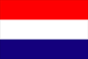
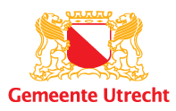
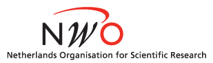
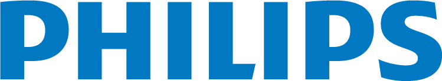

Sebastian Stober shot some beautiful photos of the Utrecht and all the ISMIR 2010 events. The photos can be found here.

corporate support / sponsors
The 11th International Society of Music Information Retrieval Conference offers various sponsorship opportunities and exhibition spaces for interested organizations. Your support will be clearly visible to the participants of the conference.
Sponsorships are available at three different levels as indicated below. Other creative forms of sponsoring are welcomed as well, such as travel grant support for excellent students, website maintenance support, conference bags provisioning, support for reception and cultural activities. Note that in the final sponsorship payment, taxes will need to be included as well (19%). Please contact Marco Spruit (spruit [at] cs.uu.nl) for further information.
Gold: 5,000 euros
- Exhibition space during poster sessions
- Large and prominent placement of logo on conference banners
- Half-page logo in conference program
- Large, separated logo in printed proceedings
- Two complimentary conference registrations
Silver: 2,000 – 3,000 euros
- Exhibition space during poster sessions
- Medium logo on conference banners
- Quarter-page logo in conference program
- Medium, separated logo in printed proceedings
- One complimentary conference registration
Bronze: 1,000 euros
- Exhibition space during poster sessions
- Small logo on conference banners
- Eighth-page logo in conference program
- Small logo in printed proceedings
Silver Sponsors:





Bronze Sponsor: